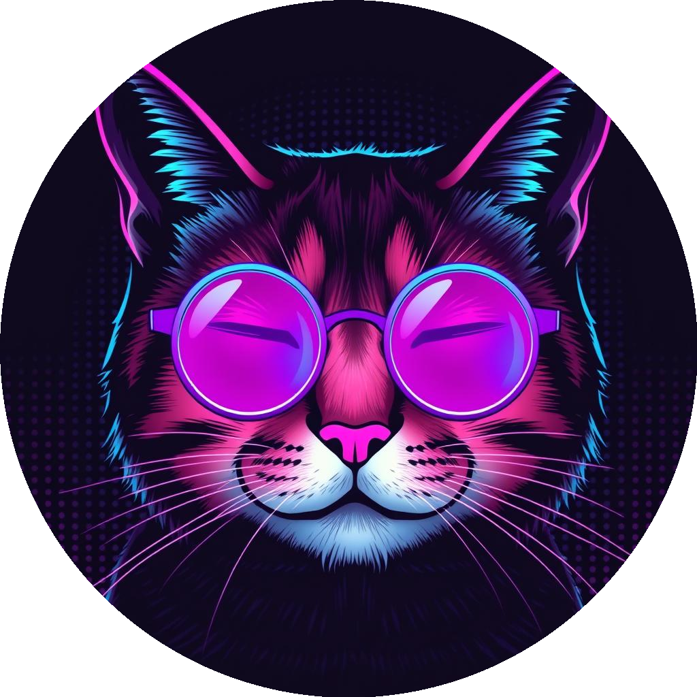
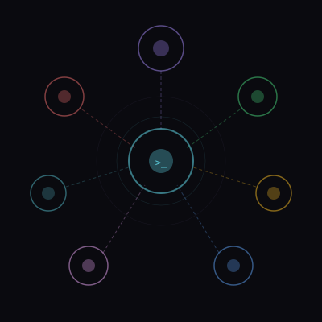

Control Center for Claude Code
Wee
Run, Monitor & Control AI Agents
Live sessions. Real-time analytics. Multi-provider. One 15MB binary.
2026

The Question
What if managing AI agents
was effortless?
AI coding is exploding
Developers run dozens of Claude sessions daily. Without a control plane, you lose context, burn tokens, and have zero visibility into what your agents are doing.
The terminal isn't enough
CLI sessions disappear when you close the tab. No history, no metrics, no way to run agents side-by-side or share sessions across devices.
Wee is the missing layer
A self-hosted control center that wraps Claude Code with live sessions, real-time analytics, voice input, and multi-provider support — all in a single binary.
The Problem with AI Agents
"Running Claude Code in a terminal is powerful, but managing multiple sessions, tracking costs, and maintaining context across projects is a nightmare."

Meet Wee
A complete control plane for your AI coding workflow.
Live Sessions
WebSocketAnalytics
Real-timeMulti-Provider
6+ APIsPermissions
YOLO modeHow Wee Works
Four pillars. One seamless experience.
Connect
Start a live agent session via browser. WebSocket streams every tool call in real-time.
Control
Granular permissions, YOLO mode toggle, provider selection — all from the UI.
Monitor
Real-time token usage, costs, tool executions, and session metrics on the dashboard.
Persist
SQLite storage keeps sessions, handoff context, and analytics across restarts.
Live Agent Sessions
"Run multiple Claude sessions side-by-side in your browser. Every tool call — Bash, Read, Write, Edit — streams live via WebSocket."

Multi-Provider
Switch between Claude, DeepSeek, GLM, Kimi, Z.AI, or any Anthropic-compatible API — without changing a line of code.
Real-Time Dashboard
Token usage. Costs. Tool calls. Git status. All live.
Built for Speed
A single 15MB Go binary. No Node.js, no Docker required. 50-100x faster than JavaScript alternatives.
Single Binary Deployment
curl -fsSL https://raw.githubusercontent.com/ schlunsen/wee/ main/scripts/install.sh | bash
wee serve --port 3000
docker compose up -d
Take control of your
AI coding workflow.
curl -fsSL https://raw.githubusercontent.com/schlunsen/wee/main/scripts/install.sh | bash